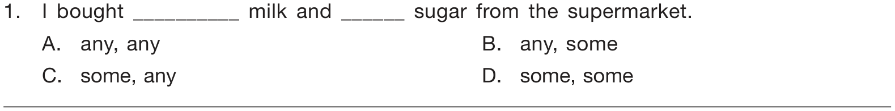
FOR QUESTIONS 1 TO 10, CHOOSE THE CORRECT OPTION TO FILL IN THE BLANK.
I bought __________ milk and ______ sugar from the supermarket.
any, any
any, some
some, any
some, some
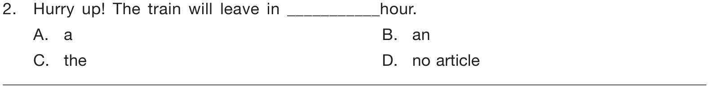
FOR QUESTIONS 1 TO 10, CHOOSE THE CORRECT OPTION TO FILL IN THE BLANK.
Hurry up! The train will leave in ___________hour.
a
an
the
no article
Article ‘an’ is used with nouns starting with vowel sound i.e. an hour. Therefore, ‘an’ is the answer.
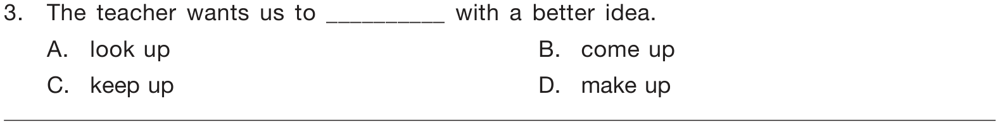
FOR QUESTIONS 1 TO 10, CHOOSE THE CORRECT OPTION TO FILL IN THE BLANK.
The teacher wants us to __________ with a better idea.
look up
come up
keep up
make up
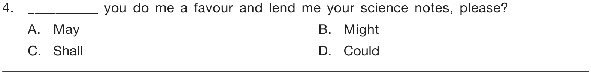
FOR QUESTIONS 1 TO 10, CHOOSE THE CORRECT OPTION TO FILL IN THE BLANK.
__________ you do me a favour and lend me your science notes, please?
May
Might
Shall
Could
Helping verb ‘could’ is used to make polite request in a sentence, so ‘could’ is the answer.
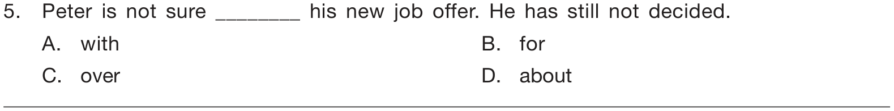
FOR QUESTIONS 1 TO 10, CHOOSE THE CORRECT OPTION TO FILL IN THE BLANK.
Peter is not sure ________ his new job offer. He has still not decided.
with
for
over
about
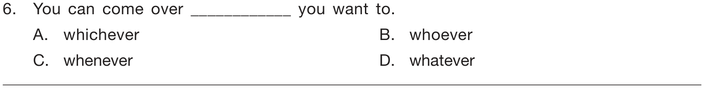
FOR QUESTIONS 1 TO 10, CHOOSE THE CORRECT OPTION TO FILL IN THE BLANK.
You can come over ____________ you want to.
whichever
whoever
whenever
whatever
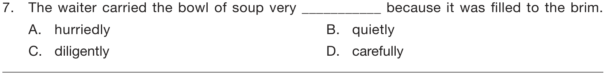
FOR QUESTIONS 1 TO 10, CHOOSE THE CORRECT OPTION TO FILL IN THE BLANK.
The waiter carried the bowl of soup very ___________ because it was filled to the brim.
hurriedly
quietly
diligently
carefully
The sentence is about how the waiter carried the bowl of soup and adverb ‘carefully’ describes the action of waiter, so ‘carefully’ is the answer.
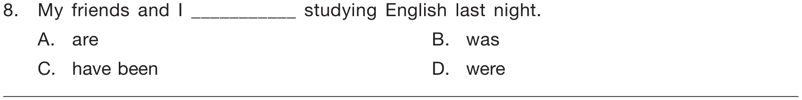
FOR QUESTIONS 1 TO 10, CHOOSE THE CORRECT OPTION TO FILL IN THE BLANK.
My friends and I ___________ studying English last night.
are
was
have been
were
Since the subject is plural and in past tense so ‘were’ is the answer.
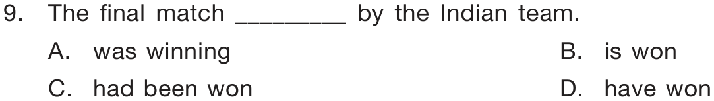
FOR QUESTIONS 1 TO 10, CHOOSE THE CORRECT OPTION TO FILL IN THE BLANK.
The final match _________ by the Indian team.
was winning
is won
had been won
have won
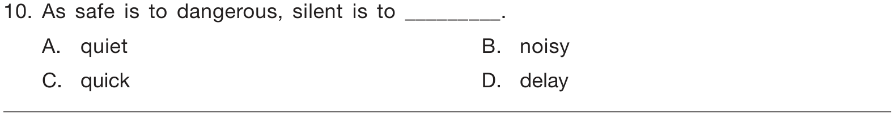
FOR QUESTIONS 1 TO 10, CHOOSE THE CORRECT OPTION TO FILL IN THE BLANK.
As safe is to dangerous, silent is to _________.
quiet
noisy
quick
delay
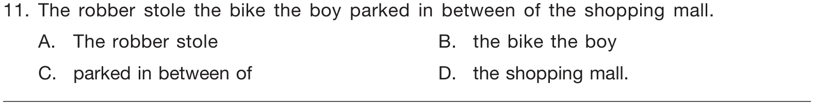
FOR QUESTIONS 11 AND 12, CHOOSE THE PART OF THE SENTENCE THAT HAS AN ERROR.
The robber stole the bike the boy parked in between of the shopping mall.
The robber stole
the bike the boy
parked in between of
the shopping mall.
The correct sentence would be, ‘‘The robber stole the bike the boy parked in the shopping mall’’.
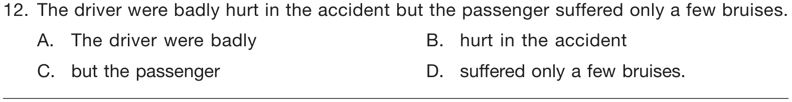
FOR QUESTIONS 11 AND 12, CHOOSE THE PART OF THE SENTENCE THAT HAS AN ERROR.
The driver were badly hurt in the accident but the passenger suffered only a few bruises.
The driver were badly
hurt in the accident
but the passenger
suffered only a few bruises.
The correct sentence would be, ‘‘The driver was badly hurt in the accident but the passenger suffered only a few bruises’’.
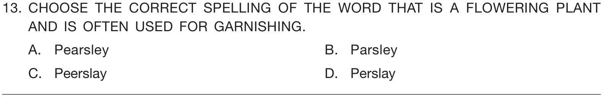
CHOOSE THE CORRECT SPELLING OF THE WORD THAT IS A FLOWERING PLANT AND IS OFTEN USED FOR GARNISHING.
Pearsley
Parsley
Peerslay
Perslay
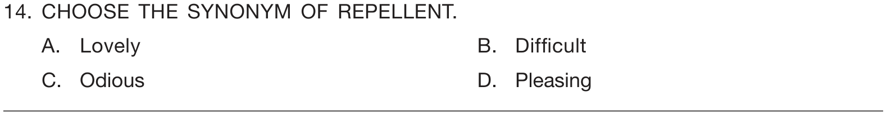
CHOOSE THE SYNONYM OF REPELLENT.
Lovely
Difficult
Odious
Pleasing
‘Odious’ is the synonym of ‘repellent’. Both these words mean ‘‘very unpleasant’’.
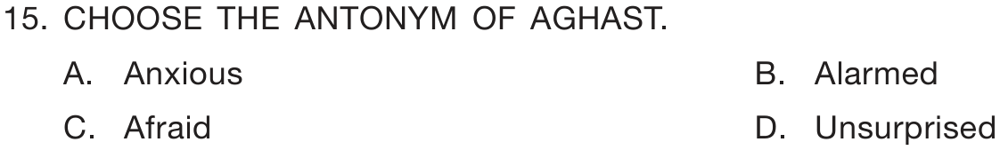
CHOOSE THE ANTONYM OF AGHAST.
Anxious
Alarmed
Afraid
Unsurprised
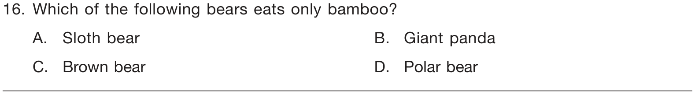
FOR QUESTIONS 16 TO 20, READ THE PASSAGE AND ANSWER THE QUESTIONS THAT FOLLOW.
Bears all over the world are considered to be a symbol of power. They are mainly found in north America and Asia. The biggest bear is a polar bear which can be as big as eight feet long and can weigh more than a thousand pounds. The sun bear is the smallest bear that can be as small as four feet long and weighs about 60 pounds.
Bears can run up to forty miles per hour. They have jaws strong enough to cut through a tree trunk. They are very smart and know how to snap a hunter’s trap and get the meat without getting caught themselves. Bears are massively built, they have non retractable claws, short tails and short legs. Their fur is very thick to keep them warm. They have an amazing sense of smell.
There are many species of bears: north American Black bears, mostly found in north America, brown bears which include grizzly bears are the most common bear, found in the forests and valleys in Europe, Asia and western North America, mostly in Canada or Alaska; giant pandas live in the mountains of China whereas sun bears live in south eastern Asian forests, polar bears live near the North Pole. Bears can be omnivores. Some, however, eat only plants and berries. What they eat depends on where they live. Polar bears eat seals and walruses. Brown bears in North America eat many kinds of animals and fish. In Japan, fruit, berries, nuts and insects make up the diet of the brown bears. Giant pandas eat only the bamboo plant. Sloth bears love termites, but will eat berries and honey too.
Which of the following bears eats only bamboo?
Sloth bear
Giant panda
Brown bear
Polar bear
Giant pandas eat only the bamboo plant.
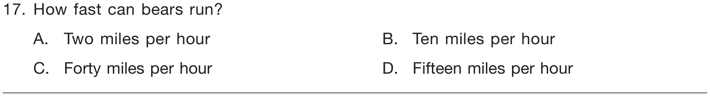
FOR QUESTIONS 16 TO 20, READ THE PASSAGE AND ANSWER THE QUESTIONS THAT FOLLOW.
Bears all over the world are considered to be a symbol of power. They are mainly found in north America and Asia. The biggest bear is a polar bear which can be as big as eight feet long and can weigh more than a thousand pounds. The sun bear is the smallest bear that can be as small as four feet long and weighs about 60 pounds.
Bears can run up to forty miles per hour. They have jaws strong enough to cut through a tree trunk. They are very smart and know how to snap a hunter’s trap and get the meat without getting caught themselves. Bears are massively built, they have non retractable claws, short tails and short legs. Their fur is very thick to keep them warm. They have an amazing sense of smell.
There are many species of bears: north American Black bears, mostly found in north America, brown bears which include grizzly bears are the most common bear, found in the forests and valleys in Europe, Asia and western North America, mostly in Canada or Alaska; giant pandas live in the mountains of China whereas sun bears live in south eastern Asian forests, polar bears live near the North Pole. Bears can be omnivores. Some, however, eat only plants and berries. What they eat depends on where they live. Polar bears eat seals and walruses. Brown bears in North America eat many kinds of animals and fish. In Japan, fruit, berries, nuts and insects make up the diet of the brown bears. Giant pandas eat only the bamboo plant. Sloth bears love termites, but will eat berries and honey too.
How fast can bears run?
Two miles per hour
Ten miles per hour
Forty miles per hour
Fifteen miles per hour
Bears can run up to forty miles per hour.
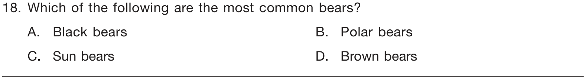
FOR QUESTIONS 16 TO 20, READ THE PASSAGE AND ANSWER THE QUESTIONS THAT FOLLOW.
Bears all over the world are considered to be a symbol of power. They are mainly found in north America and Asia. The biggest bear is a polar bear which can be as big as eight feet long and can weigh more than a thousand pounds. The sun bear is the smallest bear that can be as small as four feet long and weighs about 60 pounds.
Bears can run up to forty miles per hour. They have jaws strong enough to cut through a tree trunk. They are very smart and know how to snap a hunter’s trap and get the meat without getting caught themselves. Bears are massively built, they have non retractable claws, short tails and short legs. Their fur is very thick to keep them warm. They have an amazing sense of smell.
There are many species of bears: north American Black bears, mostly found in north America, brown bears which include grizzly bears are the most common bear, found in the forests and valleys in Europe, Asia and western North America, mostly in Canada or Alaska; giant pandas live in the mountains of China whereas sun bears live in south eastern Asian forests, polar bears live near the North Pole. Bears can be omnivores. Some, however, eat only plants and berries. What they eat depends on where they live. Polar bears eat seals and walruses. Brown bears in North America eat many kinds of animals and fish. In Japan, fruit, berries, nuts and insects make up the diet of the brown bears. Giant pandas eat only the bamboo plant. Sloth bears love termites, but will eat berries and honey too.
Which of the following are the most common bears?
Black bears
Polar bears
Sun bears
Brown bears
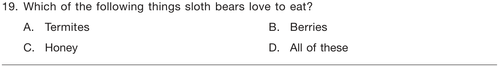
FOR QUESTIONS 16 TO 20, READ THE PASSAGE AND ANSWER THE QUESTIONS THAT FOLLOW.
Bears all over the world are considered to be a symbol of power. They are mainly found in north America and Asia. The biggest bear is a polar bear which can be as big as eight feet long and can weigh more than a thousand pounds. The sun bear is the smallest bear that can be as small as four feet long and weighs about 60 pounds.
Bears can run up to forty miles per hour. They have jaws strong enough to cut through a tree trunk. They are very smart and know how to snap a hunter’s trap and get the meat without getting caught themselves. Bears are massively built, they have non retractable claws, short tails and short legs. Their fur is very thick to keep them warm. They have an amazing sense of smell.
There are many species of bears: north American Black bears, mostly found in north America, brown bears which include grizzly bears are the most common bear, found in the forests and valleys in Europe, Asia and western North America, mostly in Canada or Alaska; giant pandas live in the mountains of China whereas sun bears live in south eastern Asian forests, polar bears live near the North Pole. Bears can be omnivores. Some, however, eat only plants and berries. What they eat depends on where they live. Polar bears eat seals and walruses. Brown bears in North America eat many kinds of animals and fish. In Japan, fruit, berries, nuts and insects make up the diet of the brown bears. Giant pandas eat only the bamboo plant. Sloth bears love termites, but will eat berries and honey too.
Which of the following things sloth bears love to eat?
Termites
Berries
Honey
All of these
Sloth bears eat termites, berries and honey too.
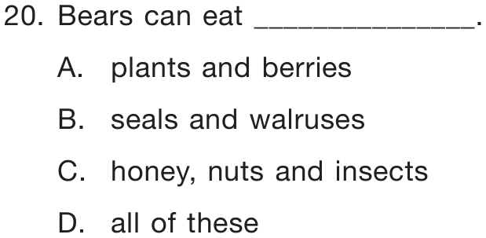
FOR QUESTIONS 16 TO 20, READ THE PASSAGE AND ANSWER THE QUESTIONS THAT FOLLOW.
Bears all over the world are considered to be a symbol of power. They are mainly found in north America and Asia. The biggest bear is a polar bear which can be as big as eight feet long and can weigh more than a thousand pounds. The sun bear is the smallest bear that can be as small as four feet long and weighs about 60 pounds.
Bears can run up to forty miles per hour. They have jaws strong enough to cut through a tree trunk. They are very smart and know how to snap a hunter’s trap and get the meat without getting caught themselves. Bears are massively built, they have non retractable claws, short tails and short legs. Their fur is very thick to keep them warm. They have an amazing sense of smell.
There are many species of bears: north American Black bears, mostly found in north America, brown bears which include grizzly bears are the most common bear, found in the forests and valleys in Europe, Asia and western North America, mostly in Canada or Alaska; giant pandas live in the mountains of China whereas sun bears live in south eastern Asian forests, polar bears live near the North Pole. Bears can be omnivores. Some, however, eat only plants and berries. What they eat depends on where they live. Polar bears eat seals and walruses. Brown bears in North America eat many kinds of animals and fish. In Japan, fruit, berries, nuts and insects make up the diet of the brown bears. Giant pandas eat only the bamboo plant. Sloth bears love termites, but will eat berries and honey too.
Bears can eat _______________.
plants and berries
seals and walruses
honey, nuts and insects
all of these
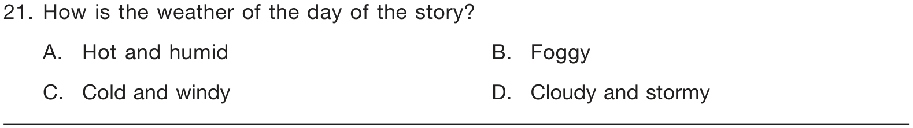
FOR QUESTIONS 21 TO 25, READ THE PASSAGE AND ANSWER THE QUESTIONS THAT FOLLOW.
It was a cold and windy night. My friend and I met after so long. We were so lost in chatting that we didn’t notice the time. It was close to ten in the night. We became late so decided to take an autorickshaw to go to our house. Suddenly, it started raining heavily, and we hurried to get into an autorickshaw but because of the rain there was no one on the road. After a while an autorickshaw came. In a hurry we didn’t ask the fare and get into it. The driver asked us where we wanted to go and we gave him the address. He was so kind that he didn’t even bother about the fare.
Since it was very cold, we decided to stop at any tea shop or restaurant to have some tea. We asked the driver and he agreed. He stopped near a small tea-stall. We ordered tea and some cookies, and asked the driver to join us and have a cup of tea. But the driver refused. I again insisted him, but he refused again politely.
I wondered why he was refusing. When I asked, he replied that he didn’t want to trouble us. I was again surprised with his behaviour.
In fifteen minutes, we reached our home. We paid him the fare and he thanked us. Then I thought to pay him some extra amount as he was so kind and allowed us to have some tea at the tea shop, and also he dropped us to our house very safely and responsibly. When I offered him the money he refused and said’ “I cannot take any extra money, not even a single penny. I have done nothing great. Being a citizen of this country, it’s my duty to take care of my fellow-citizens and help them when they are in need.” I was speechless and was dumbstruck with his integrity, honesty and generosity. I just smiled, and thanked him again.
How is the weather of the day of the story?
Hot and humid
Foggy
Cold and windy
Cloudy and stormy
It was a cold and windy night in the story.
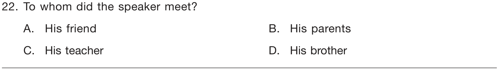
FOR QUESTIONS 21 TO 25, READ THE PASSAGE AND ANSWER THE QUESTIONS THAT FOLLOW.
It was a cold and windy night. My friend and I met after so long. We were so lost in chatting that we didn’t notice the time. It was close to ten in the night. We became late so decided to take an autorickshaw to go to our house. Suddenly, it started raining heavily, and we hurried to get into an autorickshaw but because of the rain there was no one on the road. After a while an autorickshaw came. In a hurry we didn’t ask the fare and get into it. The driver asked us where we wanted to go and we gave him the address. He was so kind that he didn’t even bother about the fare.
Since it was very cold, we decided to stop at any tea shop or restaurant to have some tea. We asked the driver and he agreed. He stopped near a small tea-stall. We ordered tea and some cookies, and asked the driver to join us and have a cup of tea. But the driver refused. I again insisted him, but he refused again politely.
I wondered why he was refusing. When I asked, he replied that he didn’t want to trouble us. I was again surprised with his behaviour.
In fifteen minutes, we reached our home. We paid him the fare and he thanked us. Then I thought to pay him some extra amount as he was so kind and allowed us to have some tea at the tea shop, and also he dropped us to our house very safely and responsibly. When I offered him the money he refused and said’ “I cannot take any extra money, not even a single penny. I have done nothing great. Being a citizen of this country, it’s my duty to take care of my fellow-citizens and help them when they are in need.” I was speechless and was dumbstruck with his integrity, honesty and generosity. I just smiled, and thanked him again.
To whom did the speaker meet?
His friend
His parents
His teacher
His brother
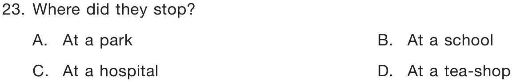
FOR QUESTIONS 21 TO 25, READ THE PASSAGE AND ANSWER THE QUESTIONS THAT FOLLOW.
It was a cold and windy night. My friend and I met after so long. We were so lost in chatting that we didn’t notice the time. It was close to ten in the night. We became late so decided to take an autorickshaw to go to our house. Suddenly, it started raining heavily, and we hurried to get into an autorickshaw but because of the rain there was no one on the road. After a while an autorickshaw came. In a hurry we didn’t ask the fare and get into it. The driver asked us where we wanted to go and we gave him the address. He was so kind that he didn’t even bother about the fare.
Since it was very cold, we decided to stop at any tea shop or restaurant to have some tea. We asked the driver and he agreed. He stopped near a small tea-stall. We ordered tea and some cookies, and asked the driver to join us and have a cup of tea. But the driver refused. I again insisted him, but he refused again politely.
I wondered why he was refusing. When I asked, he replied that he didn’t want to trouble us. I was again surprised with his behaviour.
In fifteen minutes, we reached our home. We paid him the fare and he thanked us. Then I thought to pay him some extra amount as he was so kind and allowed us to have some tea at the tea shop, and also he dropped us to our house very safely and responsibly. When I offered him the money he refused and said’ “I cannot take any extra money, not even a single penny. I have done nothing great. Being a citizen of this country, it’s my duty to take care of my fellow-citizens and help them when they are in need.” I was speechless and was dumbstruck with his integrity, honesty and generosity. I just smiled, and thanked him again.
Where did they stop?
At a park
At a school
At a hospital
At a tea-shop
They stopped at a tea shop to have some tea.
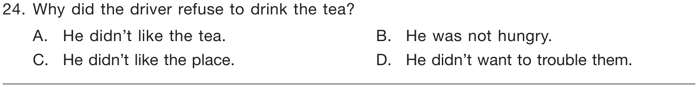
FOR QUESTIONS 21 TO 25, READ THE PASSAGE AND ANSWER THE QUESTIONS THAT FOLLOW.
It was a cold and windy night. My friend and I met after so long. We were so lost in chatting that we didn’t notice the time. It was close to ten in the night. We became late so decided to take an autorickshaw to go to our house. Suddenly, it started raining heavily, and we hurried to get into an autorickshaw but because of the rain there was no one on the road. After a while an autorickshaw came. In a hurry we didn’t ask the fare and get into it. The driver asked us where we wanted to go and we gave him the address. He was so kind that he didn’t even bother about the fare.
Since it was very cold, we decided to stop at any tea shop or restaurant to have some tea. We asked the driver and he agreed. He stopped near a small tea-stall. We ordered tea and some cookies, and asked the driver to join us and have a cup of tea. But the driver refused. I again insisted him, but he refused again politely.
I wondered why he was refusing. When I asked, he replied that he didn’t want to trouble us. I was again surprised with his behaviour.
In fifteen minutes, we reached our home. We paid him the fare and he thanked us. Then I thought to pay him some extra amount as he was so kind and allowed us to have some tea at the tea shop, and also he dropped us to our house very safely and responsibly. When I offered him the money he refused and said’ “I cannot take any extra money, not even a single penny. I have done nothing great. Being a citizen of this country, it’s my duty to take care of my fellow-citizens and help them when they are in need.” I was speechless and was dumbstruck with his integrity, honesty and generosity. I just smiled, and thanked him again.
Why did the driver refuse to drink the tea?
He didn’t like the tea.
He was not hungry.
He didn’t like the place.
He didn’t want to trouble them.
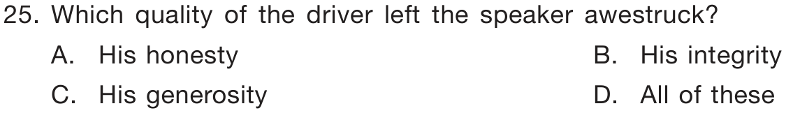
FOR QUESTIONS 21 TO 25, READ THE PASSAGE AND ANSWER THE QUESTIONS THAT FOLLOW.
It was a cold and windy night. My friend and I met after so long. We were so lost in chatting that we didn’t notice the time. It was close to ten in the night. We became late so decided to take an autorickshaw to go to our house. Suddenly, it started raining heavily, and we hurried to get into an autorickshaw but because of the rain there was no one on the road. After a while an autorickshaw came. In a hurry we didn’t ask the fare and get into it. The driver asked us where we wanted to go and we gave him the address. He was so kind that he didn’t even bother about the fare.
Since it was very cold, we decided to stop at any tea shop or restaurant to have some tea. We asked the driver and he agreed. He stopped near a small tea-stall. We ordered tea and some cookies, and asked the driver to join us and have a cup of tea. But the driver refused. I again insisted him, but he refused again politely.
I wondered why he was refusing. When I asked, he replied that he didn’t want to trouble us. I was again surprised with his behaviour.
In fifteen minutes, we reached our home. We paid him the fare and he thanked us. Then I thought to pay him some extra amount as he was so kind and allowed us to have some tea at the tea shop, and also he dropped us to our house very safely and responsibly. When I offered him the money he refused and said’ “I cannot take any extra money, not even a single penny. I have done nothing great. Being a citizen of this country, it’s my duty to take care of my fellow-citizens and help them when they are in need.” I was speechless and was dumbstruck with his integrity, honesty and generosity. I just smiled, and thanked him again.
Which quality of the driver left the speaker awestruck?
His honesty
His integrity
His generosity
All of these
The speaker was speechless and was awe struck with the driver’s integrity, honesty and generosity.
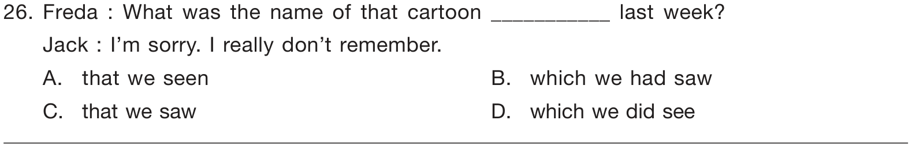
FOR QUESTIONS 26 TO 30, CHOOSE THE CORRECT OPTION TO COMPLETE EACH CONVERSATION.
Freda : What was the name of that cartoon ___________ last week?
Jack : I’m sorry. I really don’t remember.
that we seen
which we had saw
that we saw
which we did see
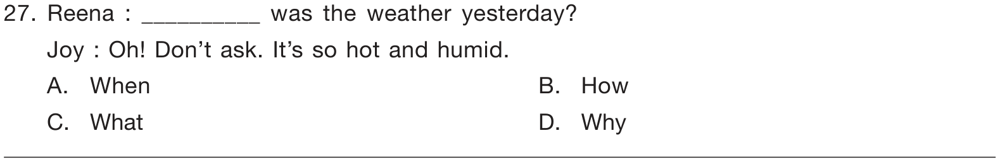
FOR QUESTIONS 26 TO 30, CHOOSE THE CORRECT OPTION TO COMPLETE EACH CONVERSATION.
Reena : __________ was the weather yesterday?
Joy : Oh! Don’t ask. It’s so hot and humid.
When
How
What
Why
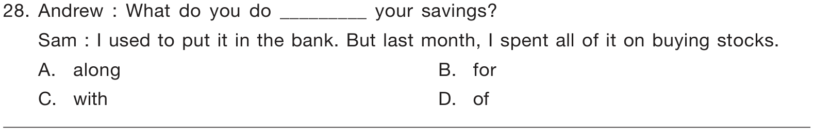
FOR QUESTIONS 26 TO 30, CHOOSE THE CORRECT OPTION TO COMPLETE EACH CONVERSATION.
Andrew : What do you do _________ your savings?
Sam : I used to put it in the bank. But last month, I spent all of it on buying stocks.
along
for
with
of
Preposition ‘with’ is used to show ‘by the use of’ in a sentence. So, ‘with’ is the answer.
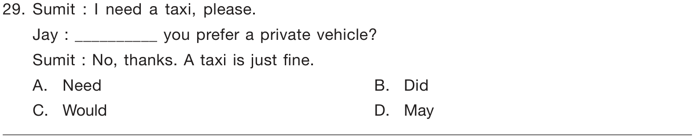
FOR QUESTIONS 26 TO 30, CHOOSE THE CORRECT OPTION TO COMPLETE EACH CONVERSATION.
Sumit : I need a taxi, please.
Jay : __________ you prefer a private vehicle?
Sumit : No, thanks. A taxi is just fine.
Need
Did
Would
May
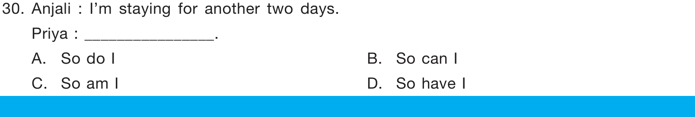
FOR QUESTIONS 26 TO 30, CHOOSE THE CORRECT OPTION TO COMPLETE EACH CONVERSATION.
Anjali : I’m staying for another two days.
Priya : ________________.
So do I
So can I
So am I
So have I
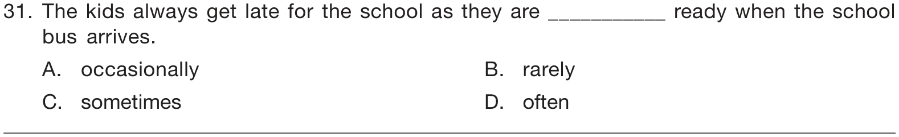
FOR QUESTIONS 31 TO 33, CHOOSE THE CORRECT OPTION TO FILL IN THE BLANK.
The kids always get late for the school as they are ___________ ready when the school bus arrives.
occasionally
rarely
sometimes
often
Adverb ‘rarely’ describes the verb ‘ready’, so ‘rarely’ is the answer.
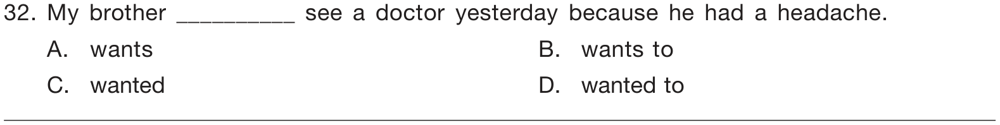
FOR QUESTIONS 31 TO 33, CHOOSE THE CORRECT OPTION TO FILL IN THE BLANK.
My brother __________ see a doctor yesterday because he had a headache.
wants
wants to
wanted
wanted to
Since the sentence is in past tense, so ‘wanted to’ is the answer.
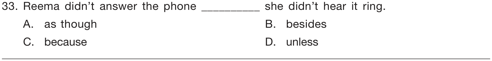
FOR QUESTIONS 31 TO 33, CHOOSE THE CORRECT OPTION TO FILL IN THE BLANK.
Reema didn’t answer the phone __________ she didn’t hear it ring.
as though
besides
because
unless
Conjunction ‘because’ is the answer as it is used to show cause/reason in a sentence.
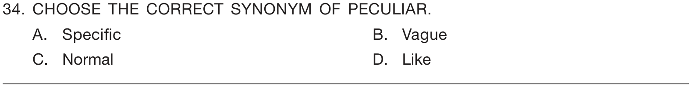
CHOOSE THE CORRECT SYNONYM OF PECULIAR.
Specific
Vague
Normal
Like
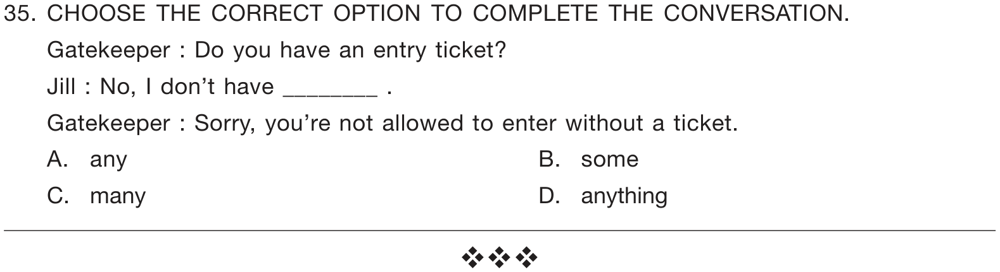
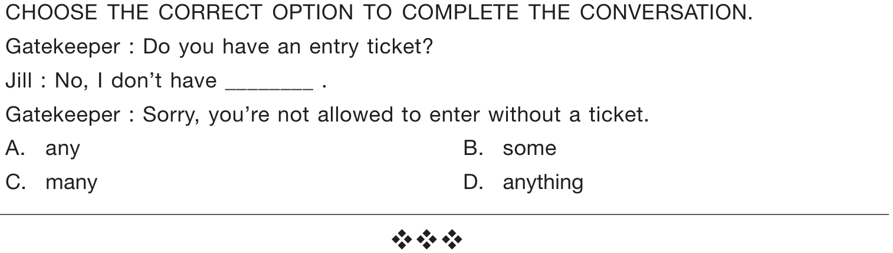
Option A
Option B
Option C
Option D